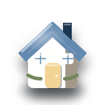

CASA
La casa sotto controllo. Senza complicazioni.
Manutenzione, misure, consumi e piccole scadenze domestiche raccolte in strumenti immediati, pensati per togliere cose dalla testa.
Prova: manutenzione, stanza, pittura, consumi, elettrodomestici…
Vai subito a
PIÙ ORDINE, MENO PROMEMORIA
Le cose di casa diventano più facili da gestire.
Gli strumenti più utili restano davanti; quelli specifici sono separati e pronti quando servono, senza menu pesanti o passaggi inutili.
A COLPO D'OCCHIO
ManutenzioneRicorda cosa va controllato.
MisureCalcoli pratici prima di comprare.
ConsumiNumeri più semplici da capire.
CasaMeno appunti sparsi, più controllo.
STRUMENTI PRINCIPALI
Parti da qui
Le azioni domestiche che servono più spesso.
ALTRI STRUMENTI
Per esigenze specifiche
Quando devi risolvere qualcosa di più mirato.
Non trovo uno strumento con queste parole. Prova con “misure”, “manutenzione” o “consumi”.